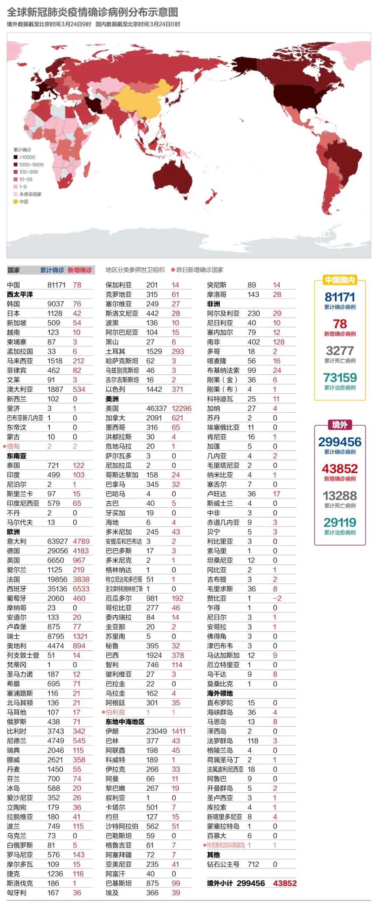
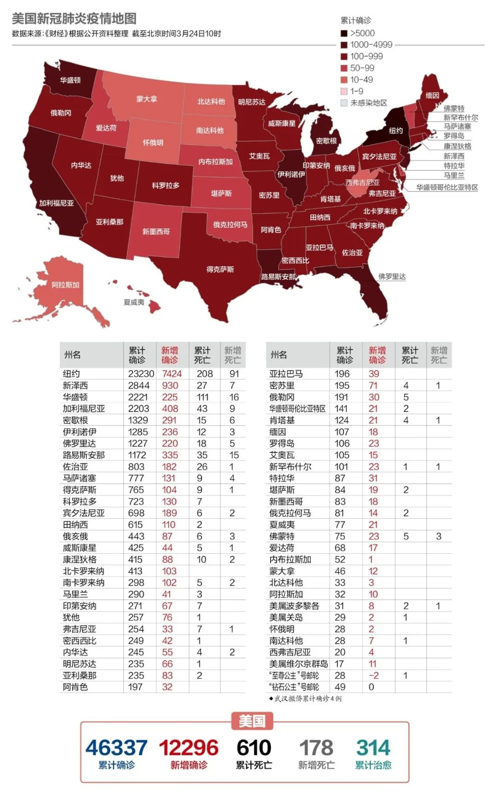
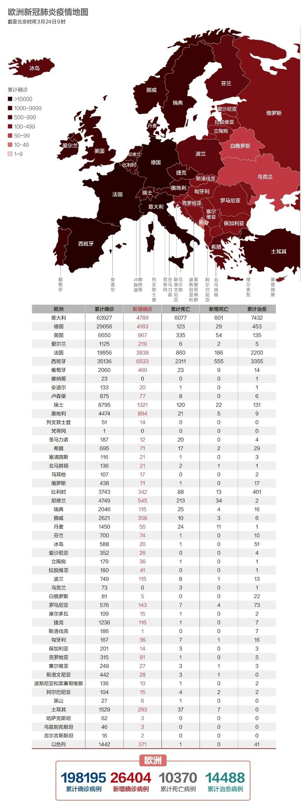

新加坡、澳大利亚“封国”！意大利全国“停产”，美国确诊人数突破3万…
原文链接 备份链接 截至北京时间3月22日12时，除中国外，184个国家和地区累计确诊222707例新冠肺炎，“钻石公主”号邮轮712例。 当前，欧美疫情仍旧快速蔓延。其中，意大利病例突破5万例，总理孔特要求全国停止所有非必要的生产活 …

中国本土病例出现“倒春寒”值得引起警惕。美国新增高得吓人并且还未到峰值。欧洲医疗资源充沛的国家开始跨国接收重症患者。
文 |《财经》数据研究员 徐进
图 |《财经》视觉中心 编辑 | 郝洲
一、国内再现本土新增，输入病例再创新高
图1

今日国内简述：国内报告新增确诊病例78例，其中境外输入74例。4例本土新增确诊病例中，武汉报告1例，系湖北省人民医院（本部）医生，近期在医院上班，感染来源尚不明；北京、上海分别报告1例境外输入关联病例；广东省新增省外输入病例1例，患者17日由湖北咸宁自驾车出发，经广东惠州于19日到达佛山并居家隔离。20日出现症状转至医院隔离治疗，23日确诊，共甄别密切接触者8人。昨日，中央应对新冠疫情工作领导小组召开会议指出，当前以武汉为主战场的全国本土疫情传播基本阻断，但零星散发病例和局部暴发疫情风险依然存在，决不可掉以轻心。湖北武汉正逐步重启城市功能。上海今日起将重大突发公共卫生事件应急响应级别从一级调至二级。
二、大流行呈加速传播趋势，IMF警告经济衰退或超2008年
图2

联合国秘书长古特雷斯23日呼吁全球范围内停火，以应对新冠肺炎疫情。古特雷斯说，新冠病毒是人类共同的敌人，而战乱地区医疗系统已经崩溃，数量已然不足的医疗专业人员成为袭击对象，难民和流离失所者在疫情面前更加脆弱。“病毒的肆虐显示战争的愚蠢”。
世卫组织总干事谭德塞表示，新冠肺炎蔓延速度正在加快。从确诊首例新冠肺炎到全球病例数量达到10万花了67天时间，而达到第二个10万仅用了11天，第三个10万仅用了4天。
国际货币基金组织（IMF）总裁格奥尔基耶娃23日表示，2020年全球经济将会陷入衰退，而且此次衰退会超过2008年的全球金融危机。
资深国际奥委会委员迪克·庞德说：“根据国际奥委会提供的信息，已决定推迟东京奥运会。尚不确定推迟的具体计划。”
图3

意大利增速有所放缓，目前平行于7日倍增线，预计4天后（Day33）超过中国。西班牙增速高于意大利，将于明天（Day22）超越同期中国。欧洲平行于5日倍增线。美国今天（Day20）超越欧洲，其目前增速仍30%以上。
三、美国三大股指抹去特朗普任期内全部涨幅
图4

美国日增突破1万例，已经远超中国的实际峰值（不算2月12日增加临床诊断标准调整存量的那次，中国的新增峰值实际在5000左右），而且美国当前还处于上升阶段。
美国参谋长联席会议主席马克·米利23日表示，军方将于72小时内在纽约和西雅图建设野战医院，每座医院各有248个床位，各配有11台呼吸机。除这两座医院外，还有一些军方的医疗设施待命部署。米利还说，美军从2020年2月1日开始就在为支援政府抗击疫情暴发做准备。
3月23日，道琼斯工业指数跌3.04%，报18591.93点；纳斯达克指数跌0.27%，报6860.67点；标普500指数跌2.93%，报2237.40点。三大股指已全部抹去特朗普上台以来涨幅。
四、欧洲多国相互支援，跨国接收重症患者
图5

当地时间3月23日，英国首相约翰逊宣布，未来三周内在全国范围内实施“禁足令”：英国民众将被允许仅出于“非常有限的目的”离开家门，包括购买基本必需品（如食品和药品）；每天进行一种形式的锻炼；任何医疗需求；并在“绝对必要”时外出上下班。约翰逊强调，“如果您不遵守规则，警察将有权执行规则，包括罚款和驱散聚会。”据称，罚款金额最初定为30英镑，但如有需要的话，也会上调罚款金额。同日，英国外交部发布一份最新声明，呼吁所有在外的英国旅行者在交通允许的情况下立即返回英国。目前，有多达100万英国人在外度假或出国旅行。
图6

在经历了连续5日的急速攀升后，意大利单日新增病例实现终于两连降。
当地时间23日意大利新冠肺炎疫情本地传播的1号病人从伦巴第大区帕维亚市的一家医院治愈出院。在社交媒体上的一段视频中，他说最美好的事情就是重新能够呼吸。同时他还呼吁大家待在家里，因为只有预防才能阻止感染。
俄罗斯23日派出14架军用飞机前往意大利援助，共同抗击新冠疫情。俄罗斯国防部称，在与意大利政府官员协调行动事宜后，俄罗斯军事专家将从事消毒和疫情预防工作。
图7

德国总理默克尔病毒测试的初步结果呈阴性。
当地时间23日德国萨克森州州长迈克尔·克雷奇默表示，应意大利方面请求当地医院将接收6名从意大利转移来的新冠肺炎患者。这是意大利首次向欧盟其他国家转移新冠肺炎病人。
图8

法国总理菲利普23日晚宣布继续加紧管制措施，从24日开始，法国民众在户外锻炼或遛狗不能超过离家1公里的范围，每天只许一次，最长不超过1小时。此外，法国军方在与德国、瑞士两国交界的米卢斯搭建的野战医院已基本完工，军用重症监护系统已经就位。米卢斯是法国最早发现新冠病毒聚集性传播的地点之一，法国此前已将该地区的部分重症患者运往国内其他地区接受治疗，德国、瑞士、卢森堡也均已同意接收该地区的部分重症患者。
【特别说明：以上统计，2月28日前为世卫组织官方统计数据，数据截止时间为北京时间每日17时；从2月28日开始，数据由《财经》根据公开资料统计，截止时间为北京时间每日9时】
小结：国内境外输入病例达到新高，出现零星本土新增，但局面都在控制之中。美国新增高得吓人，已经远超同时段的中国，并且还未到峰值。欧洲一些医疗资源充沛的国家开始跨国接收重症患者，那些拦截防疫物资造成的伤害可以得到适当弥补。

▲点击图片查看更多疫情报道
责编 | 刘思言 siyanliu@caijing.com.cn
本文为《财经》杂志原创文章，未经授权不得转载或建立镜像。如需转载，请在文末留言申请并获取授权。
原文链接 备份链接 截至北京时间3月22日12时，除中国外，184个国家和地区累计确诊222707例新冠肺炎，“钻石公主”号邮轮712例。 当前，欧美疫情仍旧快速蔓延。其中，意大利病例突破5万例，总理孔特要求全国停止所有非必要的生产活 …
原文链接 备份链接 武汉新增归0，中央再次强调“全面恢复”正常生产生活秩序。海外新增超过2万例。美国将为全民提供免费筛查检测。德国面临“二战以来最大挑战”。意大利伦巴第地区仍有40%居民在外自由活动 文 |《财经》 …
原文链接 备份链接 湖北现有疑似清零。多省发现回国人员中存在无症状感染者，“外防输入”形势仍然较为严峻。美国新增迅速逼近2000例。美、韩均计划直接向民众发放现金以度过困难时期 文 |《财经》数据研究员 徐进 图 |《财经》视觉中心 编 …
原文链接 备份链接 从股市的表现来看，市场更倾向于认同用短期的不便和经济痛苦来换取对病毒的控制 文 |《财经》特派记者 金焱 发自华盛顿 编辑 | 苏琦 新冠肺炎疫情持续肆虐，美国和欧洲为应对疫情影响经济，纷纷出台各种刺激救助政策，试图 …
原文链接 备份链接 【财新网】（记者 丁捷 综合）国内疫情得以控制，全球疫情持续蔓延。截至目前，全国已有22省份先后调降省级应急响应级别，新增确诊病例进一步减少，但国际形势依旧严峻。国家卫健委高级别专家组组长钟南山表示，全球疫情的发展估计 …